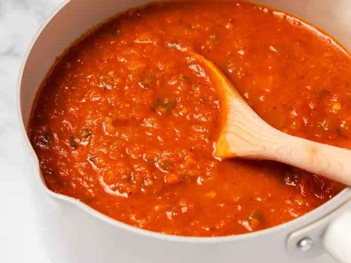
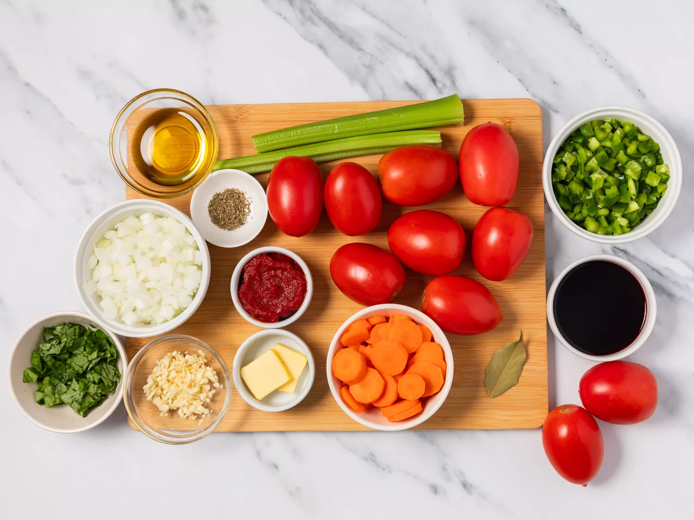
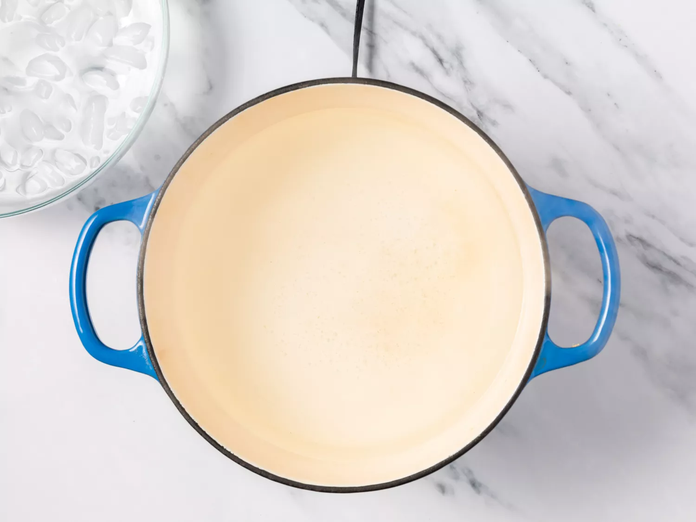
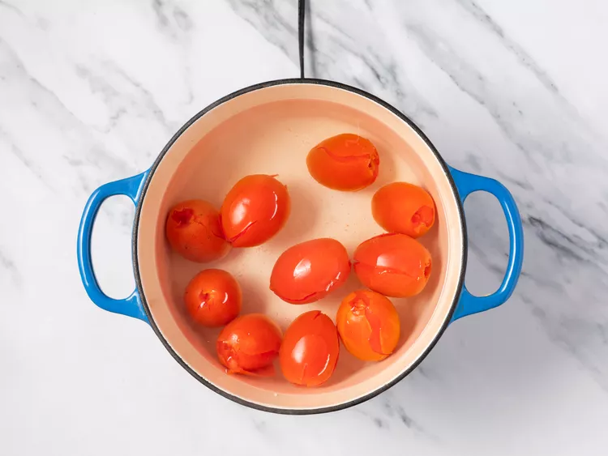
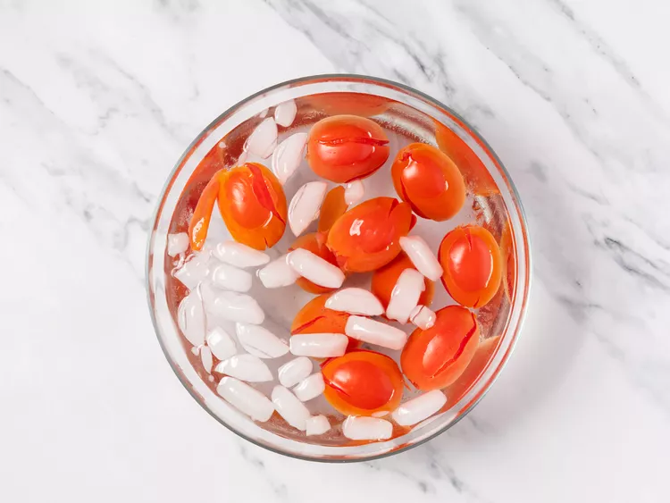
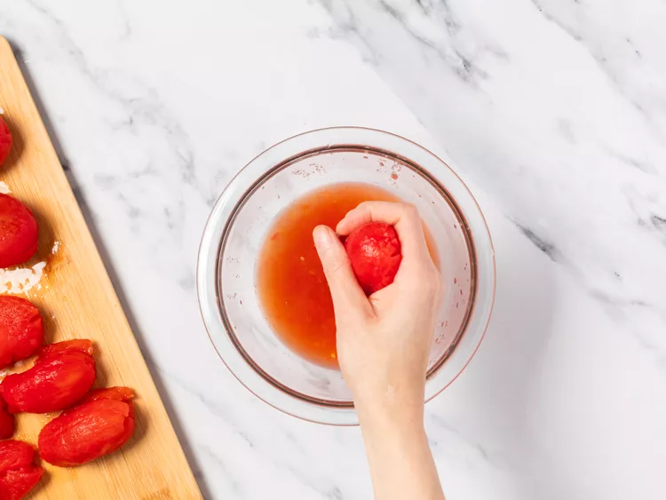
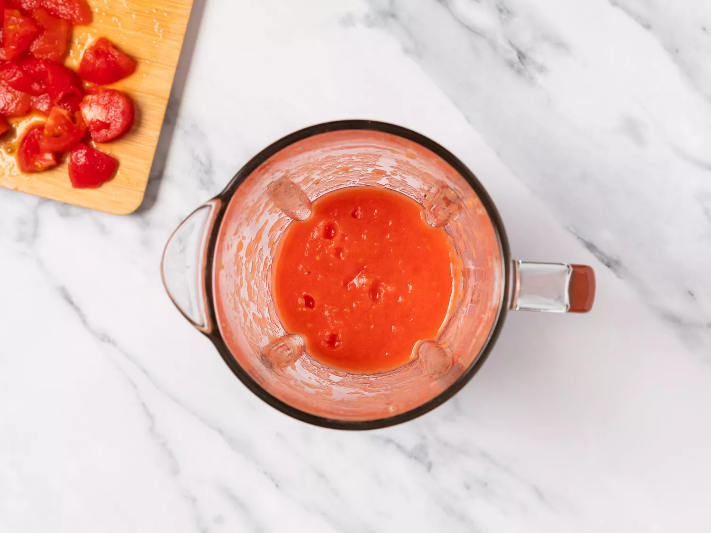
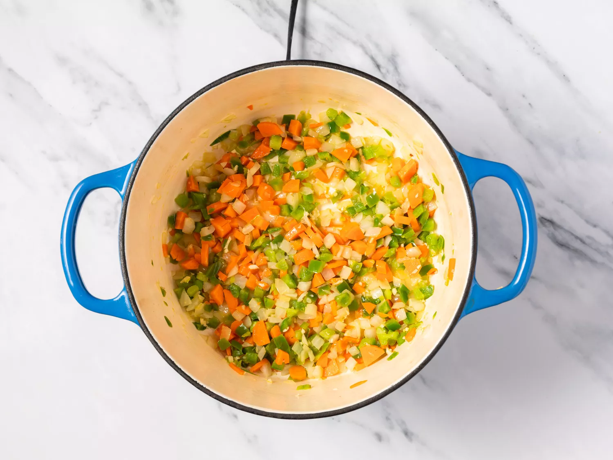
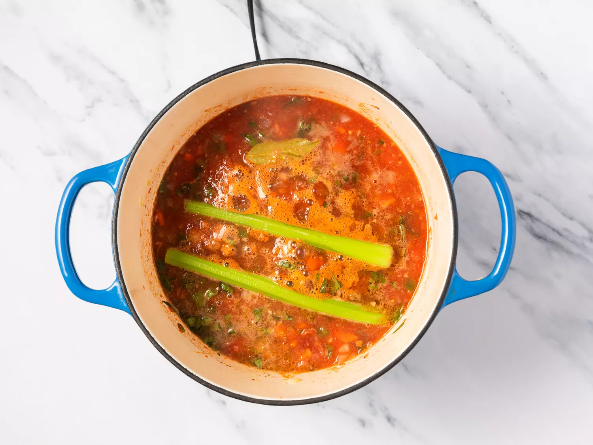

There's nothing like homemade tomato sauce to put fresh vine-ripened tomatoes to good use. This tomato sauce recipe slowly simmers on the stove for hours, creating layers of flavor that are impossible to resist.
Gather all ingredients.

Bring a large pot of water to a boil. Prepare a large bowl of ice water.

Plunge whole tomatoes in boiling water until skin starts to peel, about 1 minute.

Remove with a slotted spoon and place in ice bath. Let rest until cool enough to handle.

Remove peels, squeeze out seeds and chop 8 tomatoes.

Puree tomatoes in a blender or food processor until smooth. Chop remaining 2 tomatoes and set aside.

Heat butter and oil in a large pot or Dutch oven over medium heat. Add carrots, onion, bell pepper, and garlic; cook and stir until onion softens, about 5 minutes.

Preheat an outdoor grill for high heat; brush the grate with garlic oil.

Stir in tomato paste; simmer for an additional 2 hours. Discard celery and bay leaf and serve.